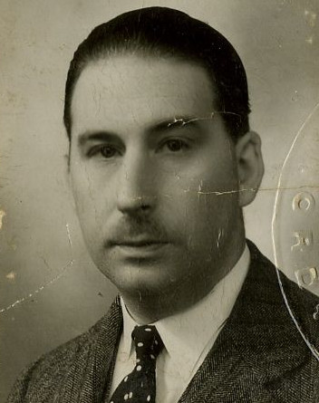

Maxime Edmond Joseph DESCAMPS — Né le 12/01/1897 à Lille — Décédé le 22/11/1953 à Lille
Maxime Edmond Joseph DESCAMPS
Né le 12/01/1897 à Lille
Décédé le 22/11/1953 à Lille
Résumé
Maxime Edmond Joseph Descamps naît le 12 janvier 1897 à Lille. Il est le fils de Maxime Descamps (1868–1914) et de Madelaine Agache (1874–1939), fille d'Édouard Agache, directeur puis président des Établissements Agache Fils. Par sa mère, il est petit-fils d'Édouard Agache et cousin issu de germain de Claude Saint-Léger, avec lequel il partage le même arrière-grand-père Auguste Longhaye.
Comme Claude Saint-Léger, il est retenu à Lille sous l'occupation allemande depuis octobre 1914. Il avait auparavant étudié à Saint-Germain-en-Laye, où il préparait son baccalauréat Lettres.
En août 1915, il s'évade de Lille occupée avec son cousin Claude Saint-Léger. Les deux jeunes hommes traversent à pied la Belgique occupée jusqu'à Gand, franchissent à la nage le canal de Gand à Terneuzen sous les tirs des sentinelles allemandes, et gagnent la Hollande neutre, puis l'Angleterre. Une fois en France non envahie, Claude fournira aux services alliés des renseignements sur les défenses allemandes autour de Lille, jusqu'au quartier général avancé de la 1re Armée britannique, à Hinges, le 24 septembre 1915.
Max s'engage volontairement à Versailles le 3 octobre 1915, deux semaines avant Claude. Il est incorporé au 32e Régiment de Dragons, 3e escadron, matricule 3192. Il combat dans les tranchées aux côtés de Claude : secteur de Tracy-le-Val à l'hiver 1916-1917, puis secteur de Coucy jusqu'en janvier 1918, date à laquelle Claude part pour Saint-Cyr. L'officier de Couteulx, qui lui dédicace l'historique du régiment après la guerre, écrit : "À Max Descamps, qui fut l'un des plus jeunes et l'un des plus brillants cavaliers du 3e Escadron. Avec toute mon affection."
Il se distingue à plusieurs reprises par sa bravoure. En mars 1918, lors de la grande offensive allemande dans la région de Beuvraignes, il s'offre volontaire pour plusieurs missions périlleuses sous le feu ennemi. En juillet 1918, au cours d'une attaque ennemie, il assure plusieurs liaisons des plus périlleuses avec les sections voisines en traversant des terrains balayés par les obus, faisant l'admiration de tous par son calme et son sang-froid.
Il obtient la Croix de guerre avec trois citations : étoile de bronze, étoile de vermeil et palme. Il reçoit également la médaille des évadés.
Après la guerre, il rejoint les Établissements Agache Fils aux côtés de Claude Saint-Léger et de son cousin René Descamps. Il est nommé administrateur de la Société en 1923, en même temps que René Descamps et Claude Saint-Léger, en remplacement d'Édouard Agache décédé. En 1928, lors du centenaire des Établissements Agache, il siège au Conseil d'Administration et au Comité de Direction aux côtés d'André et Claude Saint-Léger, perpétuant ainsi le double lien familial qui unit les deux familles depuis des générations.
Il épouse Marie-Germaine Devilder le 29 mai 1920. Ils ont cinq enfants : Annie, Christiane, Lucie, Bernard et Solange. En 1932, il réside à Lille au 1 rue Pateau.
Il décède le 22 novembre 1953 à Lille.
Sources :
{kind=link}

{kind=link}
{kind=link}
{kind=link}
{kind=link}
{kind=link}
{kind=link}
{kind=link}
{kind=link}
{kind=link}
{kind=link}
{kind=link}
{kind=link}
{kind=link}
{kind=link}
📷 Cliquez pour voir 15 photo(s)
Arbre généalogique
19/06/1868 — 06/03/1914
Madelaine AGACHE
06/04/1874 — 09/12/1939
Christiane DESCAMPS
Lucie DESCAMPS
Bernard DESCAMPS
Solange DESCAMPS
Gérard DESCAMPS